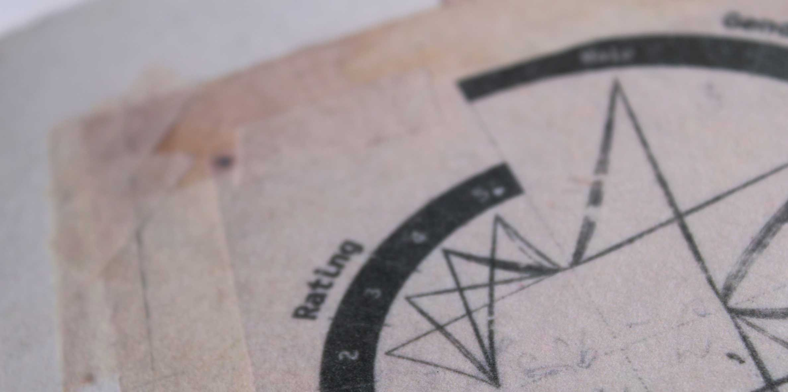
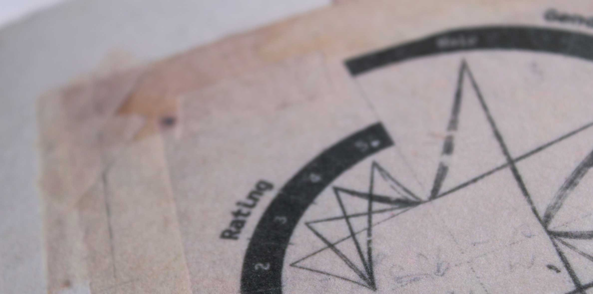
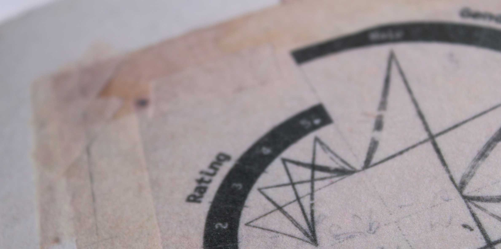

After exploring New York City, three libraries were selected to create books on.
Each book had to explore a topic that was found in the library or related to the library.
To me, the New York Public Library was always more of a tourist attraction than a place to work or study.
I find it loud, unfriendly, and way too busy.
Whenever I had gone in search of books or librarian assistance I was always sent away elsewhere.
I was curious to learn what other peoples experiences were with this institute.
15 users were surveyed and the results were turned into infographics throughout the book.
